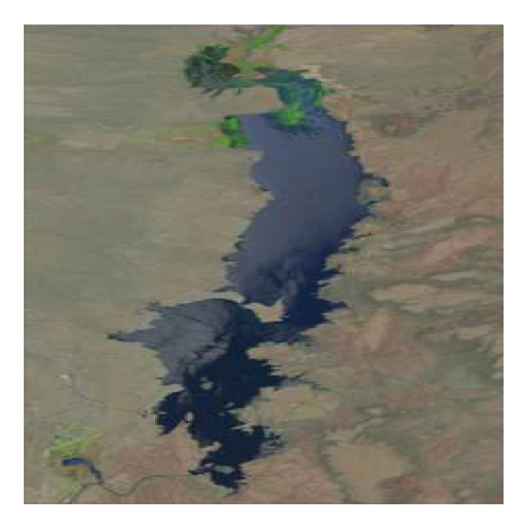
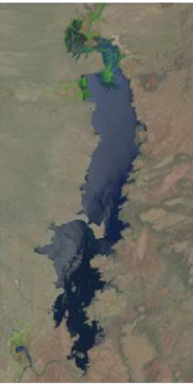
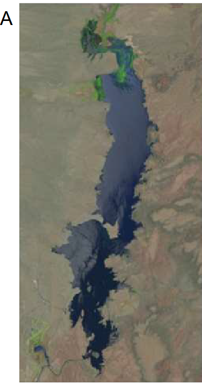
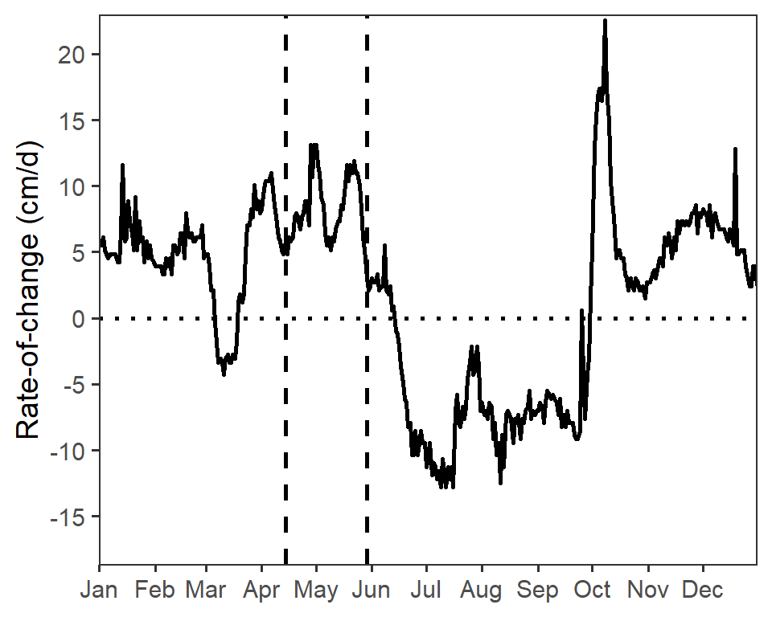
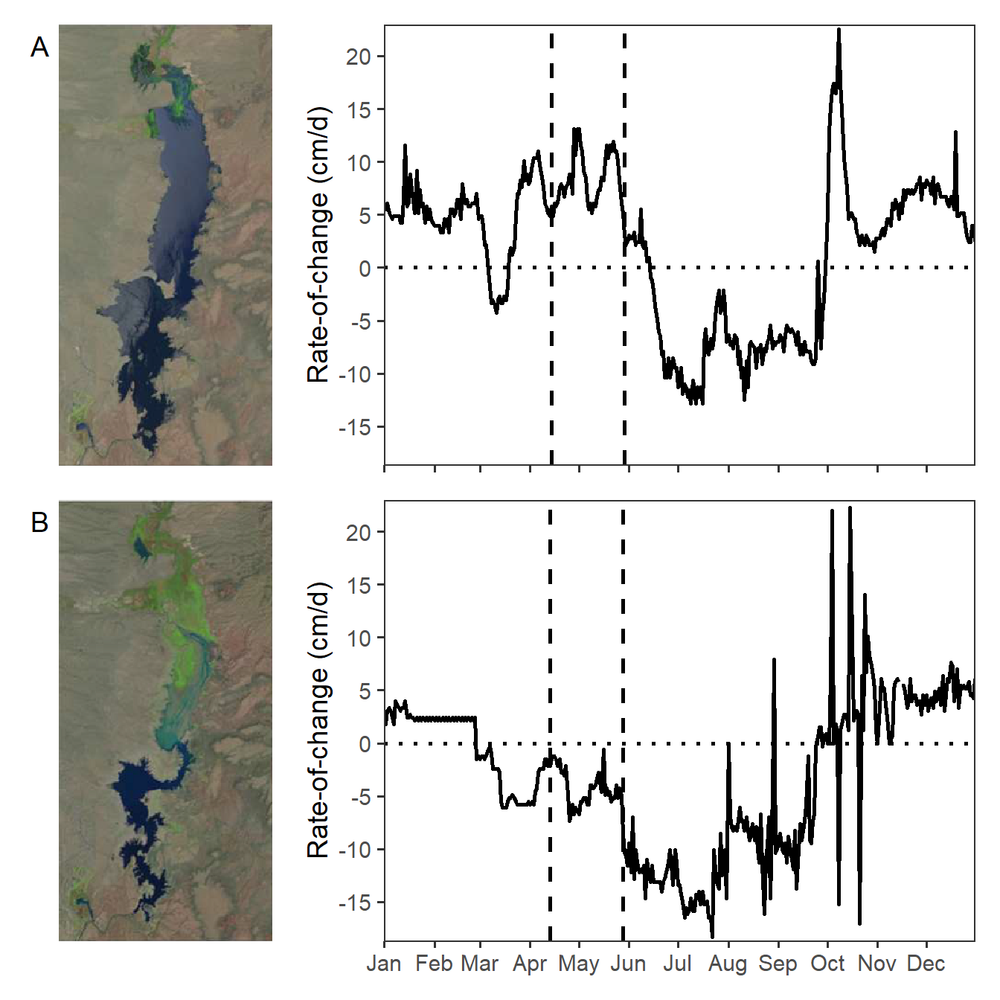

library(tidyverse) # for dplyr, ggplot2 packages
library(scales) # for breaks_width(), label_date()
library(patchwork) # for placing subpanels into one plotIntroduction
Vaisvil et al. (2022) examined the effect of varying water levels on the timing of hatch dates and relative abundance of young-of-the-year Largemouth Bass (Micropterus salmoides) in a southwestern U.S. reservoir. Figure 4 of their publication showed the rate of change of water levels in the reservoir by day for 2017 and 2018, with the range of bass hatch dates noted. Interestingly they also included satellite images of the reservoir at the begninning of the hatch date range. In this post I recreate their Figure 4 using ggplot2.
Getting Setup
The following packages are loaded for use below.
Plotting Raster Image
Figure 4 in Vaisvil et al. (2022) consists of four panels with the left two panels being satellite images. I “clipped” both satellite images and saved them as PNG files for use here. Note that both images are the same size (number of pixels in both the horizontal and vertical directions).
readPNG() from png reads a PNG file and returns a three dimensional matrix of x- and y- pixel positions as the rows and columns and four “layers” corresponding to the red, green, blue, and transparency values for a pixel. This matrix of RGBT values, however, is indexed from the upper-left whereas plotting is usually indexed from the lower-left (i.e., from 0,0). This provides several problems that are commonly discussed on forums1. To address these issues I created a small helper function below based on several suggestions I found in the forums.
1 For example, here.
png2df <- function(f) {
## Read the PNG file
df <- png::readPNG(f)
## Convert to data.frame of x-y pixel positions and RGBT color for that pixel.
## Note that the Y variable is reversed as indexing starts in the
## upper-left (rather than lower-left for plotting)
grd <- expand.grid(1:nrow(df),1:ncol(df))
dim(df) <- c(nrow(df)*ncol(df),4)
df <- cbind(grd,as.data.frame(df)) |>
mutate(RGB=rgb(V1,V2,V3,V4),
y=-Var1,
y=y+max(abs(y))+1) |>
select(x=Var2,y=y,RGB)
df
}This function takes the PNG filename as its sole argument and returns a data frame of x-y pixel coordinates and the RGBT values to plot at those coordinates.
img17 <- png2df("EB_2017.png")
head(img17)#R| x y RGB
#R| 1 1 455 #838577FF
#R| 2 1 454 #717365FF
#R| 3 1 453 #7A7C6CFF
#R| 4 1 452 #737665FF
#R| 5 1 451 #7C7F6DFF
#R| 6 1 450 #787B69FFThe y-to-x aspect ratio of this image is needed for plotting purposes below (and is saved here in ar).
ar <- max(img17$y)/max(img17$x)The image can be “plotted” by giving this image data frame object with appropriate mapping of aesthetics to ggplot() and then using geom_raster() along with scale_fill_identity()2. theme_void() is used here to remove all axes, margins around the plot, etc.
2 scale_fill_identity() ensures that the actual RGBT values in the RGB variable are used, rather than assigning colors to those values.
ggplot(data=img17,mapping=aes(x=x,y=y,fill=RGB)) +
geom_raster() +
scale_fill_identity() +
theme_void()
It is evident here that the plotted image will be “stretched” to fill the shape of the plotting device (square here). This unwanted behavior can be avoided by setting aspect.ratio= in theme() to the ar value calculated above. Unwanted white space3 around the plot can be removed by eliminating the scale expansion with expansion().
3 This space is not evident on the default white background of this webpage. Change to dark mode (slider in upper-right corner of the title bar) to see the white space.
ggplot(data=img17,mapping=aes(x=x,y=y,fill=RGB)) +
geom_raster() +
scale_fill_identity() +
scale_x_continuous(expand=expansion(mult=0)) +
scale_y_continuous(expand=expansion(mult=0)) +
theme_void() +
theme(aspect.ratio=ar)
Figure 4 in Vaisvil et al. (2022) also had a letter “tag” to the left of the figure. Adding this is a bit of work. First, the letter can be added with annotate() using geom="text" with the tag label in label= and x= at the smallest value (i.e.,-Inf) and y= at the largest value (i.e., Inf) to center the label on the very upper-left corner of the plot. An hjust= and vjust= of 1.5 will move the label down and to the left so that it is fully visible. To make room for this label the left-side plot margin must be increased (from 0, the default in theme_void()), the aspect ratio must be adjusted slightly,4 and coord_cartesian(clip="off") must be used so that the label is not “clipped” because it is outside the plot region.
4 I am not sure how to automatically modify the aspect ratio to adjust for the width of the letter. In this example I used trial-and-error to increase it by 5% (i.e., multiplying ar by 1.05).
eb17 <- ggplot(data=img17,mapping=aes(x=x,y=y,fill=RGB)) +
geom_raster() +
scale_fill_identity() +
annotate(geom="text",label="A",x=-Inf,y=Inf,
hjust=1.5,vjust=1.5,size=5) +
coord_cartesian(clip="off") +
scale_x_continuous(expand=expansion(mult=0)) +
scale_y_continuous(expand=expansion(mult=0)) +
theme_void() +
theme(plot.margin=margin(l=5,unit="mm"),
aspect.ratio=1.05*ar)
eb17
The plot above is assigned to the eb17 object for later use. I created a similar object for the 2018 image.5
5 Called eb18, but code not shown.
Plotting Water Level Fluctuations
Water Fluctuation Data
The two right panels of Figure 4 in Vaisvil et al. (2022) are line plots that show the daily rate of change in water levels by day for each year, with the beginning and ending hatch dates for the bass highlighted. The data to construct this plot for both years were provided in JFWM-21-071.S3.csv from Supplement S3 with the published paper. One of the cells in the rate of change variable shows as “#REF!”, which implies a formula error in when I suspect was the original Excel file. I decided to treat this as missing data and thus needed to include the na= code in read.csv() below. I also immediately changed most of the variable names to be more concise.
dfroc <- read.csv("JFWM-21-071.S3.csv",na=c("","#REF!")) |>
select(date=Date_Time,
storage=Storage..km.3.,
elev=Elevation..m.,
roc=Rate.of.Change..cm.)The date variable is appropriately read in as a character variable and, thus, needs to be converted to a “date” type for plotting. Unfortunately, the date data were not all recorded in the same format; some “dates” included “0:00”, whereas others did not, as shown below.
FSA::headtail(dfroc)#R| date storage elev roc
#R| 1 1/1/2017 0:00 0.2514777 1314.295 5.4864
#R| 2 1/2/2017 0:00 0.2531534 1314.349 5.4864
#R| 3 1/3/2017 0:00 0.2548389 1314.404 6.0960
#R| 726 12/29/2018 0.1396767 1310.006 4.5720
#R| 727 12/30/2018 0.1406878 1310.052 4.2672
#R| 728 12/31/2018 0.1416372 1310.094 6.0960To address this I used word() from stringr which finds each “word” (i.e., separated by a space) in a string. If the second argument to word() is set to 1 then it will return the first “word”, in this case just the date without the “0:00”. mdy() from lubridate was then used to convert date to a proper date variable and year() from lubridate was used to create a new variable that was just the year.
dfroc <- dfroc |>
mutate(date=stringr::word(date,1),
date=lubridate::mdy(date),
yr=lubridate::year(date))
FSA::headtail(dfroc)#R| date storage elev roc yr
#R| 1 2017-01-01 0.2514777 1314.295 5.4864 2017
#R| 2 2017-01-02 0.2531534 1314.349 5.4864 2017
#R| 3 2017-01-03 0.2548389 1314.404 6.0960 2017
#R| 726 2018-12-29 0.1396767 1310.006 4.5720 2018
#R| 727 2018-12-30 0.1406878 1310.052 4.2672 2018
#R| 728 2018-12-31 0.1416372 1310.094 6.0960 2018Finally, separate data frames for 2017 and 2018 were created.
dfroc17 <- dfroc |>
filter(yr==2017)
dfroc18 <- dfroc |>
filter(yr==2018)
Bass Hatching Data
Hatching dates for individual bass were recorded and provided in JFWM-21-071.S2.csv from Supplement S2 with the published paper. There were no issues with these data so I simply made the variable names more concise and converted the dates to a proper date variable similar to above.
dfhat <- read.csv("JFWM-21-071.S2.csv") |>
select(id=FISH.ID,
yr=Year,
date=Hatch_date) |>
mutate(date=lubridate::mdy(date))
FSA::headtail(dfhat)#R| id yr date
#R| 1 2 2018 2018-04-13
#R| 2 3 2018 2018-04-18
#R| 3 5 2018 2018-04-27
#R| 62 82 2017 2017-05-05
#R| 63 83 2017 2017-04-25
#R| 64 84 2017 2017-05-07Figure 4 in Vaisvil et al. (2022) requires the earliest and latest hatch dates for each year, which are compute below and then separated by year.
dfhatsum <- dfhat |>
group_by(yr) |>
summarize(minhat=min(date),
maxhat=max(date))
dfhatsum#R| # A tibble: 2 × 3
#R| yr minhat maxhat
#R| <int> <date> <date>
#R| 1 2017 2017-04-14 2017-05-29
#R| 2 2018 2018-04-13 2018-05-28dfhatsum17 <- dfhatsum |>
filter(yr==2017)
dfhatsum18 <- dfhatsum |>
filter(yr==2018)
Graphing Water Fluctuations
Both water fluctuation graphs in Figure 4 in Vaisvil et al. (2022) have the same y-axis range and breaks, based on the range of the data in both years combined. Those limits are computed below from the combined data frame.
( lmts <- range(dfroc$roc,na.rm=TRUE) )#R| [1] -18.2880 22.5552brks <- seq(-15,20,5)The code below creates the water fluctuations plot for 2017. There are four main parts to this code. First, ggplot() and geom_line() are used to plot the rate of change versus date as a line, which was made slightly larger with linewidth= to match Figure 4. Second, two geom_vline()s are used to mark the beginning and end hatch dates (as computed above) and geom_hline() is used to place a reference line at a rate of change of 0. Third, the axes are more specifically defined. The x-axis is defined with scale_x_date() using breaks=breaks_width("month") to show a break at each month and labels=label_date("%b") to use character abbreviations for those months as described in this post. Fourth, the black-and-white theme is applied, the title for the x-axis is removed, and the gridlines on the plot are removed.
roc17 <- ggplot(data=dfroc17,mapping=aes(x=date,y=roc)) +
geom_line(linewidth=1) +
geom_vline(xintercept=dfhatsum17$minhat,linetype="dashed",linewidth=1) +
geom_vline(xintercept=dfhatsum17$maxhat,linetype="dashed",linewidth=1) +
geom_hline(yintercept=0,linetype="dotted",linewidth=1) +
scale_y_continuous(name="Rate-of-change (cm/d)",expand=expansion(mult=0.01),
limits=lmts,breaks=brks) +
scale_x_date(expand=expansion(mult=0),
breaks=breaks_width("month"),labels=label_date("%b")) +
theme_bw(base_size=14) +
theme(axis.title.x=element_blank(),
panel.grid=element_blank())
roc17
Similar code was used to construct a similar plot for the 2018 data.6
6 Called roc18, but code not shown.
Recreating Figure 4
Before Figure 4 can be recreated the x-axis labels must be removed from the water fluctuations plot for 2017.7
7 I would have done this originally, but I was illustrating above how to make a proper stand-alone plot for that year.
roc17 <- roc17 +
theme(axis.text.x=element_blank())With that, Figure 4 in Vaisvil et al. (2022) can be constructed by combining the four plots created above. Note that the the widths= in plot_layout() took some trial-and-error so that the satellite images looked correct.8
8 Explore how to do this by trying different values in that argument.
eb17 + roc17 + eb18 + roc18 +
plot_layout(ncol=2,widths=c(0.3,0.7))
Note
My recreation of Figure 4 appears different from that in Vaisvil et al. (2022). It appears that they removed some rates-of-change values greater than 20 cm/d.
References
Vaisvil, A., C. A. Caldwell, and E. Frey. 2022. Water-level fluctuations and water temperature effects on young-of-year Largemouth Bass in a Southwest irrigation reservoir. Journal of Fish and Wildlife Management 13(2):534–543.
Reuse
Citation
BibTeX citation:
@online{h._ogle2023,
author = {H. Ogle, Derek},
title = {Vaisvil Et Al. (2022) {Hatching} {Date} {Figure}},
date = {2023-02-15},
url = {https://fishr-core-team.github.io/fishR/blog/posts/2023-2-15_Vaisviletal2022_ROC/},
langid = {en}
}
For attribution, please cite this work as:
H. Ogle, D. 2023, February 15. Vaisvil et al. (2022) Hatching Date
Figure. https://fishr-core-team.github.io/fishR/blog/posts/2023-2-15_Vaisviletal2022_ROC/.